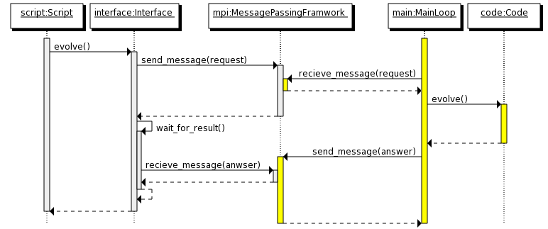
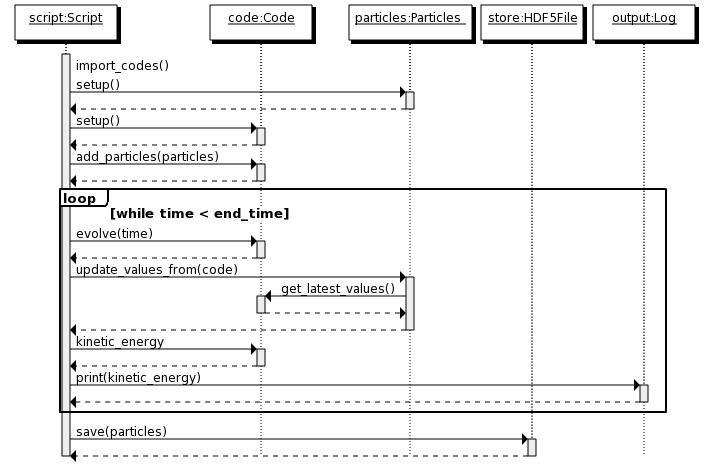

Architecture Overview¶
Layers¶
The AMUSE architecture is based on a layered design with three layers. The highest layer is a python script, written for a single problem or set of problems. The next layer contains the AMUSE code, this layer provides a library of objects and function to use in the python script. The last layer contains all the existing or legacy codes. In this layer the physical models are implemented.
Each layer builds upon a lower layer, adding functionality or ease of use to the previous layer:
![digraph layers0 {
fontsize=10.0;
node [shape=box, style=filled, fillcolor=lightyellow, width=3];
subgraph cluster0 {
style=filled;
color=azure2;
labeljust="l";
label="Layer 1";
level1 [label = "User Script"];
}
subgraph cluster1 {
style=filled;
color=azure2;
labeljust="l";
label="Layer 2";
level2 [label = "AMUSE Library"];
}
subgraph cluster2 {
style=filled;
color=azure2;
labeljust="l";
label="Layer 3";
level3 [label = "Community Codes"];
}
level1 -> level2 -> level3
}](../_images/graphviz-e01a0d83da5eccd7639ab7ef306feca08dfe6c5b.png)
Each layer has a different role in the AMUSE architecture:
- User Script layer. The code in this layer implements a specific physical problem or set of problems. This layer contains the example scripts and scripts written by the user. This layer is conceptually comparable to a User Interface layer in applications with a GUI. Coupling two or more codes happens in this layer (with the help of support classes from the AMUSE Library Layer.
- AMUSE Library layer. This layer provides an object oriented interface on top of the legacy codes. It also provides a library of functionalities, such as unit handling and data conversion. The role of this layer is very generic, it is not specific for one problem or for one physical domain.
- Community Codes layer. This layer defines the interfaces to the community codes and contains the actual codes. It provides process management for the community codes and functional interfaces to these. The code in this layer is generic in respect to problems, but specific for different physical domains.
The following sections contain a detailed explanation of the layers, starting with the lowest layer to the highest. Some details are further worked out in other chapters or in the reference manual.
Community codes layer¶
The Community Codes layer contains the actual applications and the functionality to communicate with these applications. This layer exposes every community code as a set of functions. These functions are grouped in one class per code.
The AMUSE framework code and the community codes are designed to be run as separate applications. The AMUSE framework code consists of a python script and the AMUSE library. The community codes consist of the original code-base of a scientific code extended with a new main application that handles messages send to it from the python library. Function calls into the community codes are send via a message passing framework to the actual running codes.
![digraph layers4 {
fontsize=10.0;
rankdir="LR";
node [fontsize=10.0, shape=box, style=filled, fillcolor=lightyellow];
subgraph cluster0 {
style=filled;
color=azure2;
label="Application";
"Python Interfaces";
}
"Message Passing Framework";
subgraph cluster1 {
style=filled;
color=azure2;
label="Application";
"Community Code";
}
"Python Interfaces" -> "Message Passing Framework";
"Community Code" -> "Message Passing Framework";
"Message Passing Framework" -> "Community Code";
"Message Passing Framework" -> "Python Interfaces";
}](../_images/graphviz-3168b2f763923063f1be0560e7ed4d9550b0b763.png)
The number of applications started and the machines on which these run can all be set dynamically in AMUSE. Depending on the problem a researcher can run all of AMUSE on a single desktop computer or in a mixed environment with clusters of computers. Every AMUSE run starts with one python script. This script can in turn start a number of different community codes (as separate applications). A complete run can consist of multiple applications running in parallel or in sequence and managed by one python script.
![digraph multiples {
fontsize=8.0;
rankdir="LR";
node [fontsize=8.0,shape=box, style=filled, fillcolor=lightyellow];
subgraph cluster0 {
style=filled;
color=azure2;
label="Application";
"Python Script";
}
subgraph cluster1 {
style=filled;
color=azure2;
label="Application, running on a GPU";
"Gravitational Dynamics";
}
subgraph cluster2 {
style=filled;
color=azure2;
label="Application, running on a cluster";
"Hydrodynamics";
"Hydrodynamics 1";
"Hydrodynamics 2";
"Hydrodynamics 3";
"Hydrodynamics 4";
"Hydrodynamics" -> "Hydrodynamics 1"
"Hydrodynamics" -> "Hydrodynamics 2"
"Hydrodynamics" -> "Hydrodynamics 3"
"Hydrodynamics" -> "Hydrodynamics 4"
}
subgraph cluster3 {
style=filled;
color=azure2;
label="Application";
"Stellar Evolution 1";
}
subgraph cluster4 {
style=filled;
color=azure2;
label="Application";
"Stellar Evolution 2";
}
subgraph cluster5 {
style=filled;
color=azure2;
label="Application";
"Stellar Evolution 3";
}
subgraph cluster6 {
style=filled;
color=azure2;
label="Application";
"Stellar Evolution 4";
}
"Python Script" -> "Gravitational Dynamics";
"Python Script" -> "Hydrodynamics";
"Python Script" -> "Stellar Evolution 1";
"Python Script" -> "Stellar Evolution 2";
"Python Script" -> "Stellar Evolution 3";
"Python Script" -> "Stellar Evolution 4";
}](../_images/graphviz-fb4be3ef9c634170f1bbb0431a851ec18e69dfce.png)
Message passing¶
The amuse framework interacts with legacy codes via a message passing framework. Function calls in the python scripts are translated to messages and these messages are send to the community codes using the message passing framework . The community codes wait for message events and will decode the message upon arrival and perform the requested function. The results will be send back using a similar message.
AMUSE Library layer¶
The Library layer is responsible for providing an object oriented interface to the community codes. It also provides extra functionality to help write a user script, such as file input and output of common file formats and unit conversions. These extra functionalities can be used independent of the community codes.
Every community code has a low-level interface (defined in the community interface layer) and an object-oriented interface. The low-level interface is defined as as set of functions. The object-oriented interface uses these functions and combines these with models for state-transitions, units and data sets to provide an interface that is easier to use (less error prone) and easier to couple with other codes.
![digraph amcode_0{
fontsize=10.0;
compound=true;
ranksep=1;
node [fontsize=10.0,shape=box, style=filled, fillcolor=lightyellow];
subgraph cluster0 {
style=filled;
color=azure2;
label="Object Oriented Interface";
"Unit Conversion";
"Code Interface";
"State";
"Exceptions";
}
subgraph cluster1 {
style=filled;
color=azure2;
label="Data Model";
"Particles" ;
"Grid Points";
}
"Legacy Interface";
"Code Interface" -> "Community Code Interface"[ ltail=cluster0];
subgraph cluster2 {
style=filled;
color=azure2;
label="Support";
"Input/Ouput";
"Units";
}
"Code Interface" -> "Particles"[lhead=cluster1, ltail=cluster0];
"Code Interface" -> "Units"[lhead=cluster2, ltail=cluster0];
}](../_images/graphviz-549aa9b976e25145972115363d4c065cccea26a5.png)
Model of a community code¶
The community codes of every module in all physical domains are modelled using the same template. The template consists of attributes and wrappers. Attributes provide a common interface for sub-parts of the code, for example the particles attribute provides an interface to add, update and remove the particles in a code. Attributes combine several functions in a legacy interface into one object. Wrappers are defined on top of the community functions and add functionality to existing methods. For example for every method the units of the arguments and return values can be defined in a filter. Wrappers add functionality to individual methods.
Attributes¶
The template divides the interface object of a code into a number of attributes. Each attribute refers to an object implementing a specific sub-interface of the code. For example a code can have a parameter attribute, this attribute implements the ParameterSet sub-interface. The ParameterSet sub-interface defines how to interact with the parameters of a code (in this case each parameter can be set or queried from the set by name using normal python attribute access).
The template for all codes is divided into the following sub-interfaces:
- parameters
- Parameters influence how the code works. Parameters are usually set just after creating a code. Parameters should be read-write or write-only.
- properties
- Properties inform the user about the state of the code. The current model time is a property. Properties are always read-only.
- particle sets
- Particle sets provide a common interface for a set of particles in the code. A code can have multiple particle sets defined under different names (for example gas, stars and dark matter)
- grids
- Grids provide access to multi-dimensional data. A code can have multiple grids defined in a hierarchy (for AMR or SMR codes)
Wrappers¶
Wrappers decorate a method. Wrappers can do pre- and post-processing of the arguments or decide if a method can safely be called.
- units and error code
- Defines a unit for each argument of the wrapped method. When called the arguments will be converted to numbers in the correct unit. The return values will be converted to quantities (numbers with a unit).
- state
- The state of a code determines which functions are valid to call and how the code can transfer from one state into another. For example, a code might give incorrect answers if the potential energy is requested before the particles are entered into the code, the state model will raise an error to inform the script writer of this problem.
Implementation¶
The implementation of the object-oriented interface is based on the adaptor pattern. A Community Code Interface class is adapted to create a class which provides “parameters”, “particle sets/gridpoints” , “methods with units” , “properties with units” , “state control” and “Unit conversions for incompatible unit systems”. Each functionality has the same interface for all codes in the system.
![digraph amcode_1{
fontsize=10.0;
compound=true;
ranksep=1.0;
rankdir="LR";
node [fontsize=10.0,shape=box, style=filled, fillcolor=lightyellow];
subgraph cluster1 {
style=filled;
color=azure2;
label="Adaptor";
labelloc="b";
labeljust="r";
"Particles or Gridpoints"
"Parameters"
"Methods with Units"
"Properties with Units"
"State control"
"Unit conversions for incompatible unit systems"
}
"Community Code Interface"
"Community Code Interface"->"Particles or Gridpoints"[lhead=cluster1];
}](../_images/graphviz-f96a0089cd3ef358b05e1726745dbb4f40808e42.png)
User Script¶
The final layer is the User Script Layer this layer contains all the scripts written by a researcher for a specific problem or set of problems. These scripts are always written in python and can use all the functionality provided by the two lower layers in the AMUSE framework. The scripts don’t need to follow a fixed design.
